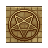

Dark design desk
| This article is a stub. You can help Graveyard Keeper Wiki by expanding it. |
| Dark design desk | |
|---|---|
 | |
Basic information
| |
Related pages :
|
Dungeon |
Location(s)
| |
| Sacrifice Zone | |

The Dark Design Desk is located in the Sacrifice zone at the entrance to the Dungeon, and does not require construction before use. Blueprints available at the Dark Design Desk are used to make the area appear "scary" as part of Snake's quest Decorate the Dark Church. Most of the recipes are unlocked upon receiving the task "Reach  20 at Dark Church". Only the Skulls in the Wall and Skulls in a Column recipes are available prior to this point.
20 at Dark Church". Only the Skulls in the Wall and Skulls in a Column recipes are available prior to this point.
Recipes
| Item produced | Quality provided | Materials required | Slots available |
|---|---|---|---|
| Crucified skeleton |
2 |
1× Skull |
2 |
| Crucified skeleton on the wall |
1 |
1× Skull |
2 |
| Blood fountain |
2 +3 blood |
5× A polished brick of stone |
2 |
| Skulls in the wall |
1 |
5× Skull |
2 |
| Skulls in a column |
1 |
5× Skull |
2 |
| ||||||||